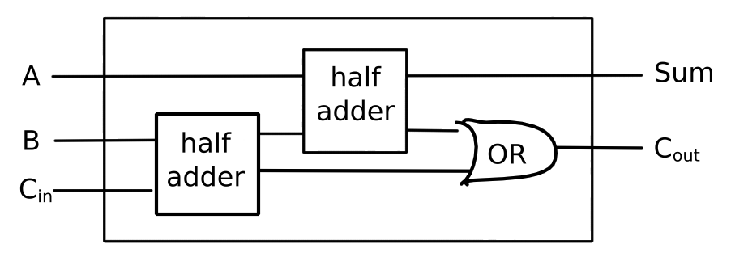

SICP 5b
Computational Objects
Table of Contents
1 Electrical systems
To understand how to build correspondences between objects in the world, and objects in the computer, let's take the example of electrical systems.
Primitive and means of combination
(define a (make-wire)) (define b (make-wire)) (define c (make-wire)) (define d (make-wire)) (define e (make-wire)) (define s (make-wire)) (or-gate a b d) (and-gate a b c) (inverter c e) (and-gate d e s)
Means of abstraction
(define (half-adder a b s c)
(let ((d (make-wire)) (e (make-wire)))
(or-gate a b d)
(and-gate a b c)
(inverter c e)
(and-gate d e s)))
Lambda is the ultimate glue.
(define (full-adder a b c-in sum c-out)
(let ((s (make-wire))
(c1 (make-wire))
(c2 (make-wire)))
(half-adder b c-in s c1)
(half-adder a s sum c2)
(or-gate c1 c2 c-out)))

As the means of combination and abstraction are inherited from LISP, only the primitives need to be implemented.
(define (inverter in out)
(define (invert-in)
(let ((new
(logical-not (get-signal in))))
(after-delay inverter-delay
(lambda ()
(set-signal! out new)))))
(add-action! in invert-in))
(define (logical-not s)
(cond ((= s 0) 1)
((= s 1) 0)
(else
(error "invalid signal" s))))
(define (and-gate a1 a2 output)
(define (and-action-procedure)
(let ((new-value
(logical-and (get-signal a1)
(get-signal a2))))
(after-delay and-gate-delay
(lambda ()
(set-signal! output
new-value)))))
(add-action! a1 and-action-procedure)
(add-action! a2 and-action-procedure))
(define (make-wire)
(let ((signal 0) (action-procs '()))
(define (set-my-signal! new)
(cons ((= signal new) 'done)
(else
(set! signal new)
(call-each action-procs))))
(define (accept-action-proc proc)
(set! action-procs
(cons proc action-procs))
(proc))
(define (dispatch m)
(cond ((eq? m 'get-signal) signal)
((eq? m 'set-signal!)
set-my-signal!)
((eq? m 'add-action!)
accept-action-proc)
(else
(error "Bad message" m))))
dispatch))
(define (call-each procedures)
(cond ((null? procedures) 'done)
(else
((car procedures))
(call-each (cdr procedures)))))
(define (get-signal wire)
(wire 'get-signal))
(define (set-signal! wire new-value)
((wire 'set-signal!) new-value))
(define (add-action! wire action-proc)
((wire 'add-action!) action-proc))
(define (after-delay delay action)
(add-to-agenda!
(+ delay (current-time the-agenda))
action
the-agenda))
(define (propagate)
(cond ((empty-agenda? the-agenda)
'done)
(else
((first-item the-agenda))
(remove-first-item! the-agenda)
(propagate))))
Now let's see the machinery in action.
(define the-agenda (make-agenda)) (define inverter-delay 2) (define and-gate-delay 3) (define or-gate-delay 5) (define input-1 (make-wire)) (define input-2 (make-wire)) (define sum (make-wire)) (define carry (make-wire)) (probe 'sum sum) sum 0 new-value = 0 (probe 'carry carry) carry 0 new-value = 0
A probe is an object that has the property that when you change a wire that
it's attached to, it types out a message.
(half-adder input-1 input-2 sum carry) (set-signal! input-1 1) (propagate) sum 8 new-value = 1 done (set-signal input-2 1) (propagate) carry 11 new-value = 1 sum 16 new-value = 0 done
2 Agendas and queues
What functionality is required from agendas and queues?
Agendas
(make-agenda) (current-time agenda) (empty-agenda? agenda) (add-to-agenda! time action agenda) (first-item agenda) (remove-first-item agenda)
Agendas consist of a header, followed by segments comprised of pairs of times and queues.
Queues
(make-queue) (insert-queue! queue item) (delete-queue! queue) (front-queue queue) (empty-queue? queue)
In order to insert a new segment in an agenda between the first and last item, the front and rear have to be changed. Hence the following procedures are required.
(set-car! <pair> <value>) (set-cdr! <pair> <value>)
3 Danger with lists
With the implementation of set!, care needs to be taken with lists, as
elements within can be changed.
(define a (cons 1 2)) (define b (cons a a)) (set-car! (car b) 3) (car a)
3
(cadr b)
3
It is impossible to mitigate this. If set! is allowed, so are set-car!,
set-cdr! etc.
Once you let the camel's nose into the tent, the rest of him follows.
4 Church of Alonzo
cons can be constructed out of hot air. The idea was originally concocted by
Alonzo Church, the greatest programmer of the 20th century (even though he
never saw a computer).
(define (cons x y) (lambda (m) (m x y))) (define (car x) (x (lambda (a d) a))) (define (cdr x) (x (lambda (a d) d)))
Surely this doesn't work? A step-by-step example must surely prove this to be nonsense…
(car (cons 35 47)) (car (lambda (m) (m 35 47))) ((lambda (m) (m 35 47)) (lambda (a d) a)) ((lambda (a d) a) 35 47) 35
Marry this idea with mutable data.
(define (cons x y)
(lambda (m)
(m x
y
(lambda (n) (set! x n))
(lambda (n) (set! y n)))))
(define (car x)
(x (lambda (a d sa sd) a)))
(define (cdr x)
(x (lambda (a d sa sd) d)))
(define (set-car! x y)
(x (lambda (a d sa sd) (sa y))))
(define (set-cdr! x y)
(x (lambda (a d sa sd) (sd y))))
Once I've introduced one assignment operator, I have introduced them all!